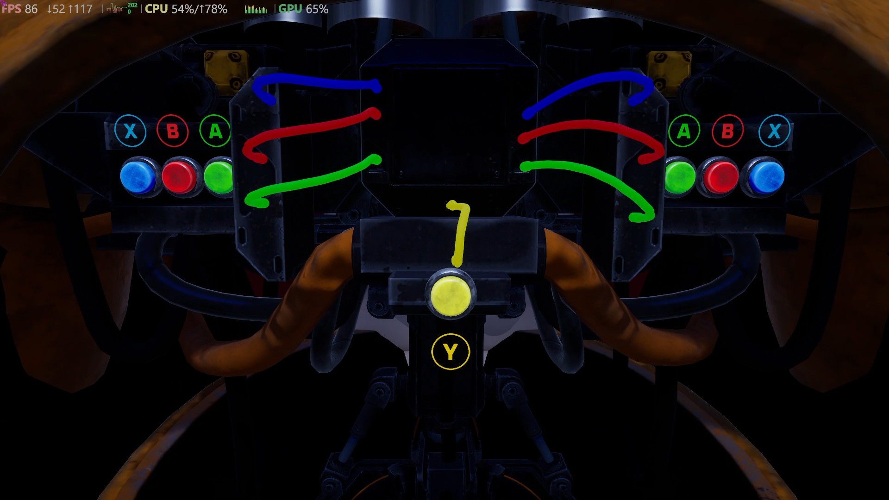
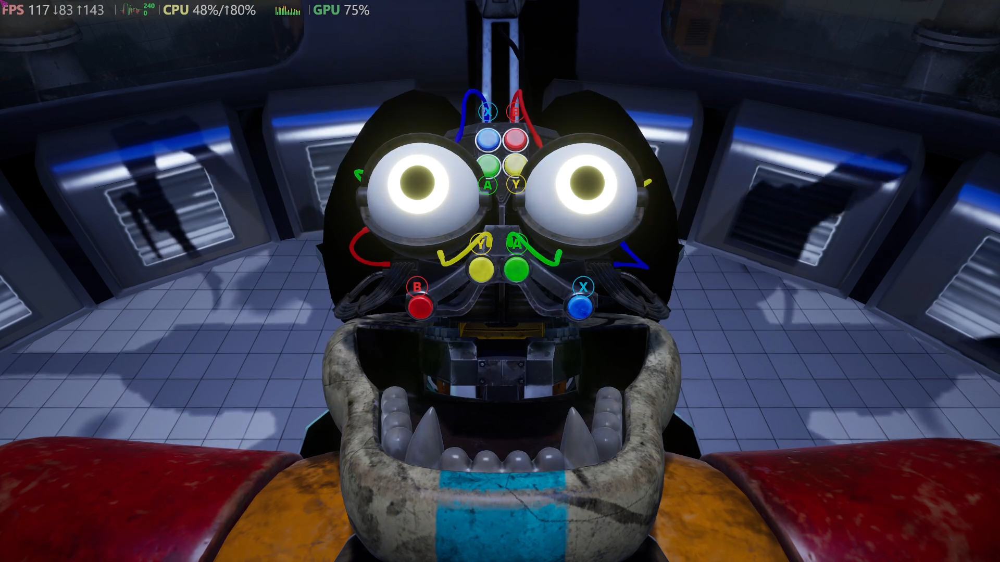
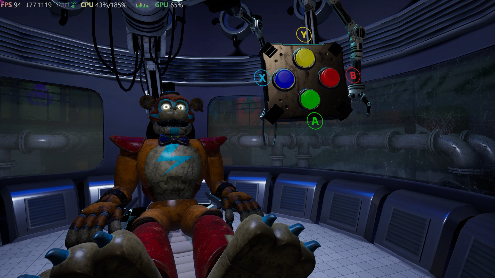

This mod for Five Nights at Freddy's Security Breach restores the old textures used for the Upgrade and Test Minigame as seen in the Pre-Release version of the game.
Alongside that, this mod also restores the removed round win and minigame completed sounds that were never previously heard in-game!
This mod took a lot of work to pull off as I needed to decompile the entire blueprint used for this part of the game. This was quite possibly one of the biggest single blueprints this game has in it.
Just dumping the cooked Blueprint using Kismet Analyzer blueprint takes around 3 minutes.
All that being said, I still had fun learning how all of this comes together and works!

